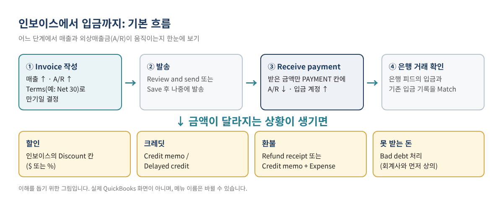
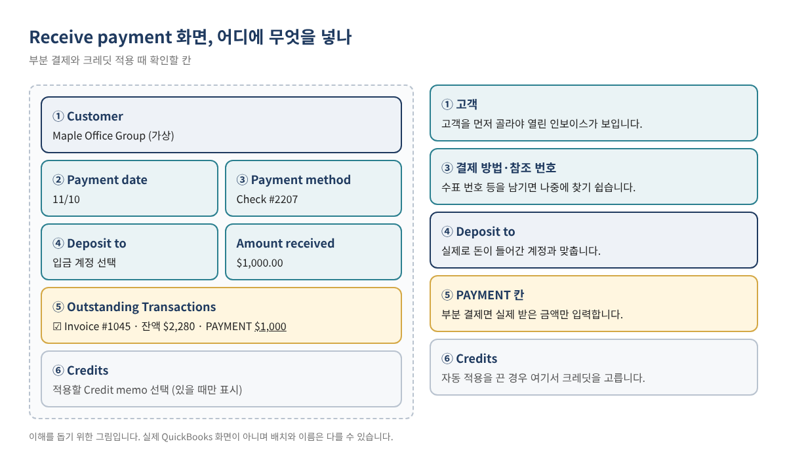
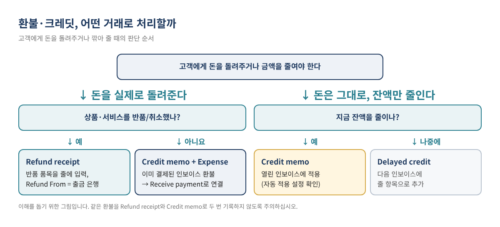
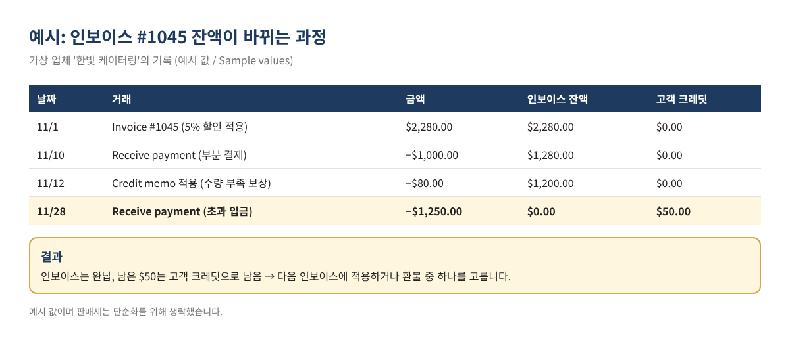

인보이스를 보내는 것까지는 어렵지 않습니다. 문제는 그다음입니다. 고객이 절반만 보내 오고, 일부 품목을 깎아 달라고 하고, 이미 받은 돈 일부를 돌려줘야 하고, 어떤 고객은 금액보다 더 많이 보내기도 합니다. 이때마다 "입금"으로 그냥 기록하거나 인보이스 금액을 직접 고쳐 버리면, 외상매출금(Accounts Receivable, A/R) 잔액과 은행 잔액이 서로 맞지 않게 되고 월말 Reconcile에서 원인을 찾느라 시간이 걸립니다.
이 글은 QuickBooks Online(QBO)에서 Invoice → Receive payment의 기본 흐름을 정리한 뒤, 부분 결제, 할인, 크레딧(Credit memo·Delayed credit), 환불(Refund receipt), 초과 입금, 받지 못할 돈(Bad debt)을 각각 어떤 거래로 기록해야 하는지 단계별로 설명합니다. 시리즈 첫 글 QuickBooks Online 기초 가이드에서 짧게 소개한 "판매 흐름"과 바로 앞 글 견적서(Estimate)에서 인보이스까지의 다음 단계에 해당합니다.
이런 분께 필요합니다 ☐ 고객이 인보이스 금액을 나눠서 보내는 분 ☐ 할인을 줄 때 인보이스 금액을 손으로 고쳐 온 분 ☐ 환불을 그냥 "지출"로 기록해 매출이 부풀려진 것 같은 분 ☐ 고객 잔액이 마이너스(−)로 나와 이유를 모르는 분 ☐ 몇 달째 안 들어오는 인보이스를 어떻게 정리할지 고민인 분
Intuit 도움말에 따르면 인보이스를 기록하면 고객이 갚아야 할 금액이 생기고, 아직 받지 못한 인보이스는 대차대조표의 외상매출금(A/R)에 쌓입니다. 고객이 돈을 보내면 Receive payment로 해당 인보이스에 입금을 연결해야 A/R이 줄어듭니다. 인보이스를 만들어 놓고 입금은 은행 피드에서 "매출"로 따로 추가하면, 매출이 두 번 잡히고 인보이스는 계속 미수로 남습니다.

금액이 바뀌는 상황마다 쓰는 거래가 다릅니다. 아래 표를 먼저 보고 본문을 읽으면 이해가 빠릅니다.
| 상황 | 사용하는 거래 | 장부 효과 (요약) |
|---|---|---|
| 고객에게 청구 | Invoice | 매출 ↑, A/R ↑ |
| 고객이 전액 또는 일부를 보냄 | Receive payment | A/R ↓, 입금 계정 ↑ |
| 인보이스 금액 자체를 깎아 줌 | 인보이스의 Discount 칸 | 청구 금액 ↓ (처음부터 할인 반영) |
| 이미 보낸 인보이스의 잔액을 줄여 줌 | Credit memo | A/R ↓, 원래 인보이스는 그대로 남음 |
| 다음 청구 때 빼 주기로 약속 | Delayed credit | 다음 인보이스에 적용될 때까지 매출 영향 없음 |
| 반품·취소된 품목의 돈을 돌려줌 | Refund receipt | 선택한 은행 계정에서 환불 기록 |
| 이미 결제된 인보이스를 환불 (반품 없음) | Credit memo + Expense → Receive payment로 연결 | A/R과 은행 잔액이 함께 맞춰짐 |
| 끝내 받지 못할 돈 | Bad debt 처리 (Credit memo 방식) | 손익계산서에 Bad debts 비용 |
팁 위 표의 "장부 효과"는 Intuit 도움말 설명을 요약한 것입니다. 세금 신고에서 어떻게 다뤄지는지는 장부 방식(현금주의·발생주의)과 상황에 따라 다르므로 회계사와 확인하십시오.
인보이스를 정확히 만들어 두면 이후 입금·크레딧 처리가 훨씬 단순해집니다. 고객과 상품·서비스 목록이 미리 등록되어 있으면 좋습니다(목록 정리는 고객·거래처·상품 목록, 엑셀로 한 번에 가져오기 참고).
주의 Intuit 안내에 따르면 인보이스 기능은 QuickBooks Online Free와 Lite 요금제에서 제한됩니다. 요금제별 기능과 가격은 자주 바뀌므로 현재 구독 화면에서 확인하십시오.
할인을 주려고 단가를 직접 낮추면, 나중에 "원래 가격이 얼마였고 얼마를 깎아 줬는지"를 알 수 없습니다. QBO에는 할인 칸이 따로 있으므로 먼저 켜 두는 것이 좋습니다.
Intuit 안내에 따르면 인보이스 작성 중에 할인 칸을 끄면 계정 설정에서도 함께 꺼집니다.
| 방식 | 입력 방법 | 이럴 때 적합 | 주의할 점 |
|---|---|---|---|
| 정률 할인 (%) | Discount 칸에서 % 선택 후 비율 입력 | "전체 5% 할인" 같은 일괄 할인 | 판매세 계산 순서를 확인 |
| 정액 할인 ($) | Discount 칸에서 $ 선택 후 금액 입력 | "이번 건 $100 할인" | — |
| 할인 품목 (음수 줄) | 할인용 상품·서비스를 만들고 단가를 음수로 입력 | 특정 프로모션 이름을 남기고 싶을 때 | Intuit 안내상 이 방식은 정액만 가능하며 % 입력은 안 됨 |
판매세가 있는 업종은 할인을 세금 계산 전에 적용할지 확인해야 합니다. Intuit 안내에 따르면 할인 칸 옆의 양쪽 화살표 아이콘으로 세금 칸과 할인 칸의 순서를 바꿀 수 있고, 이렇게 하면 할인이 판매세 계산 전에 적용됩니다. 어떤 순서가 맞는지는 주(州)와 할인 성격에 따라 다를 수 있으므로 해당 주의 판매세 안내를 확인하십시오(판매세는 시리즈 13편에서 따로 다룹니다).

부분 결제를 받으면 인보이스는 남은 잔액만큼 계속 열려 있습니다. 나머지를 받을 때 같은 방법으로 Receive payment를 한 번 더 기록하면 됩니다. 인보이스 금액을 받은 금액으로 고쳐서 "완납"처럼 만드는 것은 피하십시오. 매출이 줄어들고, 고객이 아직 갚을 돈이 있다는 기록도 사라집니다.
팁 Deposit to 계정은 실제 은행에 돈이 들어간 방식과 맞춰야 합니다. 여러 고객의 수표를 한 번에 묶어 입금하는 경우의 처리와 정리 방법은 Undeposited Funds 정리하기에서 자세히 다룹니다. 이후 은행 피드에 입금이 뜨면 새로 Add하지 말고 기존 기록과 Match합니다(QBO 은행 연결 완전 정리 참고).
고객에게 돈을 돌려주지는 않지만 받을 금액을 줄여 줘야 할 때 크레딧을 씁니다. Intuit 도움말은 두 가지를 다음과 같이 구분합니다.
| 구분 | Credit memo | Delayed credit |
|---|---|---|
| 쓰는 때 | 지금 고객 잔액을 바로 줄일 때 | 나중 청구에서 빼 주기로 할 때 |
| 현재 잔액 | 바로 줄어듦 | 그대로 유지 |
| 적용 방법 | 인보이스에 전부 또는 일부 적용, Receive payment에서도 적용 가능 | 다음 인보이스 작성 시 줄 항목으로 추가 |
| 매출 리포트 | 적용하지 않아도 매출 리포트에 반영 | 인보이스에 적용되기 전까지 반영 안 됨 |
Credit memo가 어디에 적용되는지는 Settings ⚙ → Account and settings → Advanced 탭의 Automation 섹션에 있는 Automatically apply credits 설정에 따라 달라집니다.
자동 적용을 끈 상태에서 수동으로 적용하려면 Receive payment에서 고객을 고르고, 인보이스와 Credit memo를 함께 체크한 뒤 인보이스의 PAYMENT 칸에 크레딧 금액을 넣습니다. 이때 실제로 받은 돈이 없으므로 Amount received 등은 비워 둡니다(Intuit 안내 기준).
주의 Intuit 안내에 따르면 이전 기간의 인보이스에 Delayed credit을 넣으면 그 기간의 잔액이 바뀝니다. 이미 마감했거나 회계사에게 넘긴 기간이라면 날짜를 꼭 확인하십시오.

Intuit 안내는 품목 환불에 Credit memo를 따로 또 만들지 말라고 강조합니다. 같은 환불이 두 번 기록되기 때문입니다. 또 Refund receipt는 장부에 "기록"만 할 뿐이므로, 수표 발행이나 외부 결제 서비스(카드 단말기, 온라인 결제 업체 등)에서의 실제 환불은 따로 처리해야 합니다.
이렇게 하면 A/R과 은행 잔액이 함께 맞춰집니다. 환불이 은행 피드에 뜨면 새로 추가하지 말고 위 Expense와 Match합니다.
고객이 인보이스보다 많이 보낸 경우, Receive payment에서 받은 금액 전체를 입력하고 인보이스에 잔액만큼 적용하면 남은 금액은 고객 크레딧으로 남습니다. Intuit 도움말은 이 경우 세 가지 선택지를 제시합니다: 다른 미결 인보이스에 적용, 고객에게 환불, 또는 팁으로 기록. 다른 인보이스가 열려 있다면 Receive payment에서 그 인보이스도 함께 선택해 남은 금액을 적용할 수 있습니다.
몇 달째 연락이 없는 인보이스를 그냥 삭제하면 원래 매출 기록까지 사라집니다. Intuit 도움말은 다음 순서를 안내합니다.
주의 Intuit 안내는 발생주의(accrual)로 장부를 쓰는 경우 이런 대손이 일정 조건에서 공제될 수 있다고 설명하면서, 처리 전에 회계사와 상의할 것을 권합니다. 현금주의 장부라면 애초에 매출로 신고되지 않은 금액일 수 있으므로 처리 방법이 달라질 수 있습니다. 반드시 회계사와 먼저 확인하십시오.
가상의 케이터링 업체 "한빛 케이터링"이 고객 "Maple Office Group"에게 11월 1일 행사 케이터링을 청구했습니다. 판매세는 예시를 단순하게 하려고 생략했습니다.
| 항목 | 수량 | 단가 | 금액 (예시 값 / Sample values) |
|---|---|---|---|
| 점심 케이터링 (1인) | 40 | $55.00 | $2,200.00 |
| 배달·세팅비 | 1 | $200.00 | $200.00 |
| 소계 | $2,400.00 | ||
| 할인 5% (Discount 칸) | −$120.00 | ||
| 인보이스 #1045 합계 (Terms: Net 30) | $2,280.00 |

검산: $2,280 − $1,000 − $80 − $1,200 = $0, 그리고 $1,250 − $1,200 = $50 크레딧입니다. 고객 잔액 리포트에서 이 고객의 잔액이 −$50으로 보이면 크레딧이 남아 있다는 뜻입니다.
Receive payment에서 고객을 고르면 열린 인보이스가 모두 나타납니다. 해당 인보이스들을 체크하고 각 PAYMENT 칸 금액의 합계가 실제 받은 금액과 같은지 확인한 뒤 저장합니다. 이렇게 하면 은행 피드의 입금 한 건과 Match하기도 쉽습니다.
대부분 미적용 크레딧이나 초과 입금이 남아 있다는 뜻입니다. 고객 화면에서 Credit memo나 미적용 입금을 찾아 다음 인보이스에 적용하거나 환불하십시오.
인보이스 금액은 그대로 두고, 은행에 실제로 들어온 금액과의 차이는 수수료 비용으로 기록하는 것이 일반적입니다. Intuit 안내에 따르면 QuickBooks Payments로 받은 결제는 QuickBooks가 해당 계정에 기록해 주고, 외부 결제 업체로 받은 결제는 직접 기록해야 합니다. 구체적인 방법은 결제 업체와 사용 중인 연동 방식에 따라 다르므로 회계 담당자와 정해 두십시오.
돈이 실제로 고객에게 나가면서 반품·취소된 품목이 있다면 Refund receipt, 돈은 나가지 않고 받을 금액만 줄여 주면 Credit memo입니다. 반품 없이 이미 결제된 인보이스를 환불하면 Credit memo와 Expense를 함께 씁니다(그림 3).
가능하지만 적용 날짜에 따라 이미 확인한 기간의 숫자가 바뀔 수 있습니다. 이미 마감했거나 세금 신고에 쓴 기간이라면 회계사와 먼저 상의하십시오.
이 글은 일반적인 교육용 정보이며 세무·법률·재무 자문이 아닙니다. 개별 상황에 대한 판단은 자격을 갖춘 전문가와 상의하십시오. QuickBooks Online의 화면, 메뉴 이름, 요금제별 기능과 가격은 수시로 바뀌므로 실제 작업 전에 현재 화면과 Intuit 공식 안내를 확인하십시오. 예시의 업체와 고객은 모두 가상입니다.
QuickBooks is a registered trademark of Intuit Inc.; not affiliated with or endorsed by Intuit.